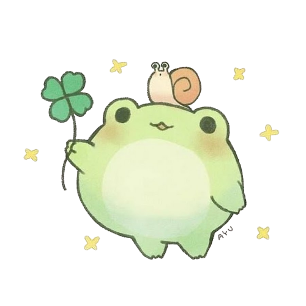

♦EcoScan♦
Introduction
Dans le cadre de la SAE-01: Réaliser un développement d'application, nous avons en binôme (avec Lucas Leveque) conçu et prototypé une application nommée "EcoScan", autour d’un contexte fourni: l'écologie . Notre application est basée sur un principe simple, proposer aux utilisateurs un scanner, permettant en scannant un produit d’obtenir des informations liées à son impact écologique, sa provenance, etc… Ainsi que des alternatives possibles à ce produit. De plus, l'application propose des leçons et astuces afin de permettre à chacun de se sensibiliser et d’en apprendre plus sur l’écologie. Cet apprentissage peut se poursuivre via un forum.
Ainsi, les objectifs principaux de l'applications sont d'offrir à chacun un moyen facile, rapide et accessible d’agir pour la planète sans changer leurs habitudes quotidiennes.
Voici ci-dessous les différentes étapes de notre projet, dans le cadre de notre cours d'IHM.
♦Analyse du scénario♦
Tout d'abord, nous devions ,à partir d'un contexte donné, construire un scénario précis afin de répondre au enjeux de ce contexte, puis développer en détails ce scénario.


Tout d'abord, il nous a été fournit un package Java de type MVC (Model/View/Controler) afin d'avoir une base sur laquelle s'appuyer, étant débutant en Java. A partir de cette base de code, nous avions comme début de jeu un personage qui se déplace à un intervalle de 1s dans une matrice prédéfinie. Au-dessus, une barre de progresion qui avance selon le temps écoulé et enfin une image fixe d'un monstre quelconque. Ici, nous avons principalement apris à gérer l'affichage selon des coordonées.
Par la suite, nous avons créé une boucle prédéfinie rectangulaire afin de faire avancer notre héro uniquement dans cette boucle.
Une des fonctionnalités principale du jeu: le placement de cartes! Pour cette première phase, les cartes "Meadow, Grove et Rock" on été implémentées et le joueur peut passer en mode plannification pour poser ses tuiles: le temps s'arrête, le joueur peut ensuite repasser en mode aventure et le temps reprends. Le héro peut à présent profiter des effets de ces tuiles. De plus, dans la console, notre héro se bat contre le slime vert qu'il rencontre. Ce slime disparait de la boucle par la suite.
Afin d'avoir un jeu plus agréable, nous avons changé les graphismes du jeu, mais aussi créé une nouvelle boucle moins linéaire. Le héro peut avancer plus vite et gagner des ressources après avoir battu un monstre!
♦Phase 2♦
Après avoir validée et complété la première phase, voici la seconde phase qui consite principalement à implémenter les combats mais aussi l'inventaire et les équipements du héro qui influe sur ses statistiques de combat.

Lorsque le héro se trouve sur la même case qu'un monstre, une fenêtre de combat se lance. Ainsi, on peut voir tout les montres et leurs statistiques, mais également une console qui montre l'avancée du combat.
Le plateau est maintenant légèrement différent, puisqu'il y a maintenant affiché les équipements du héro, son inventaire mais également ses statistiques actuelles.
Lorsque le héro est en mode planification, il peut désormais également mettre des équipements qu'il a obtenu en tuant des monstres. Ses équipements lui donne des points de stats additionnel plus ou moins important selon la raretée de l'objet (Gris --> Bleu --> Jaune --> Orange).
Les statistiques du héro sont affichées en permanence et s'actualise selon les équipments ou d'autres éléments du jeu.
♦Phase 3♦
Qu'est-ce que ce projet m'a apportée ?
Dans l'ensemble, ce projet a été l'un des plus amusants et agréable à faire. Loop Hero étant un jeu étant grandement apprécié par la communauté du jeu vidéo et par moi-même ce fut d'autant plus motivant de travailler sur ce projet. En tant qu'étudiante développeuse, cela m'a permise d'enrechir mes connaissances dans la programmation orientée objets en particulier en Java (en suivant des consignes précises d'un sujet donné) et me pousse à développer mes connaissances dans ce langage. De plus, j'ai aussi acquis des bonnes pratiques de programmation qui m'aideront par la suite dans mes études. Enfin, ce projet m'a amenée à développer mon sens du travail d'équipe et de la communication.